Restauro monumentale, digitalizzazione e capacità esecutiva negli edifici pubblici e tutelati.
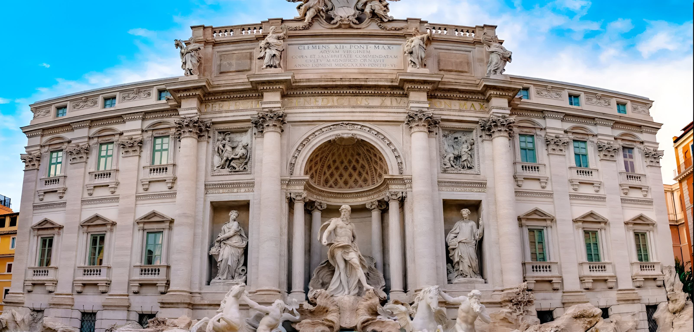
M.DS e Aurea IA
Restauro, digitalizzazione e nuove forme di fruizione.
Presentazione aziendale 2026
M.DS e Aurea IA lavorano su un punto preciso: conservare il patrimonio culturale e renderlo più accessibile attraverso digitalizzazione e intelligenza artificiale. La presentazione mostra le competenze operative già maturate e i progetti che possono trasformarle in un modello replicabile.
02 · Il gruppo
Aurea IA
Restauro monumentale, digitalizzazione e capacità esecutiva negli edifici pubblici e tutelati.
Software, intelligenza artificiale e ricerca applicata ai documenti e alla conservazione del patrimonio.
Esperienza operativa dal 2017. Sviluppo tecnologico dedicato dal 2026.
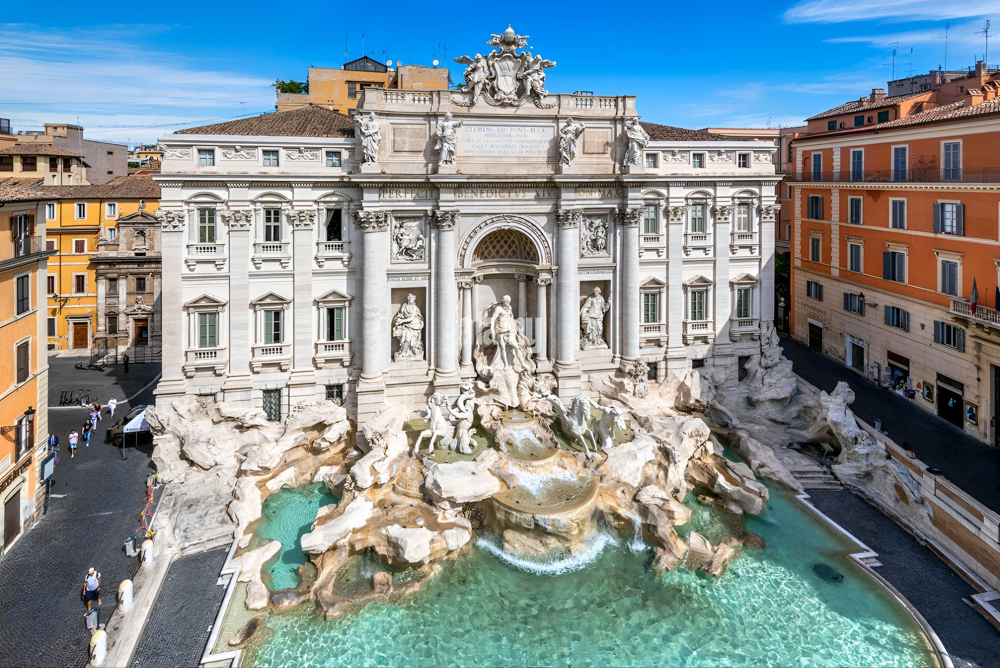
M.DS rappresenta la base operativa del gruppo. Gestisce cantieri, restauro e digitalizzazione. Aurea IA sviluppa la componente software e le applicazioni di intelligenza artificiale. La forza nasce dalla possibilità di collegare attività sul bene reale, documenti digitalizzati e strumenti tecnologici.
03 · Il modello
Aurea IA
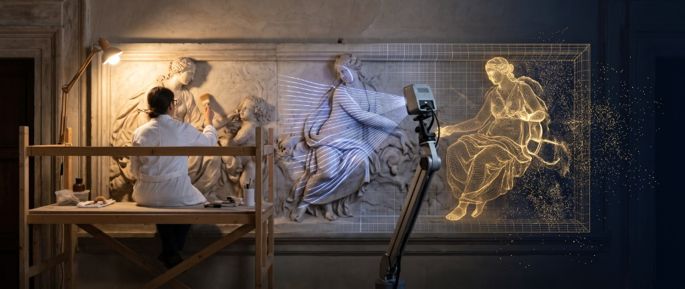
Interventi su edifici monumentali e vincolati, con adeguamento degli impianti quando necessario.
Scansione, controllo, metadati e archiviazione di documenti a elevato valore storico.
Ricerca nei fondi digitalizzati, automazione dei metadati e modelli predittivi per i monumenti.
Impiantistica, progettazione e sicurezza sostengono l'esecuzione, ma non definiscono il messaggio principale.
Il gruppo concentra la proposta su tre competenze. Il restauro tutela il bene fisico. La digitalizzazione conserva e organizza i documenti. L'intelligenza artificiale rende questi contenuti ricercabili e sostiene il monitoraggio dei monumenti. Le altre attività tecniche restano un supporto operativo.
04 · Digitalizzazione
Aurea IA
Un processo organizzato dalla presa in carico del fondo alla consegna dei dati.
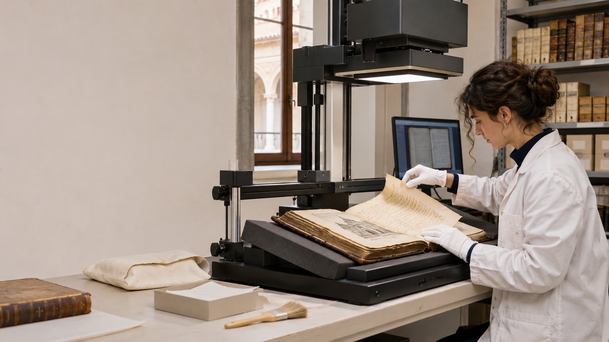
La digitalizzazione viene gestita come un processo completo. Il gruppo dispone di scanner planetari, personale dedicato e software per metadati e controllo. La capacità produttiva serve progetti estesi, mentre l'attenzione archivistica protegge i documenti originali.
05 · Esperienze documentali
Aurea IA
Esperienze maturate su patrimoni documentali diversi per periodo, formato e finalità di consultazione.
La varietà dei fondi costituisce la base per sviluppare strumenti di ricerca e valorizzazione fondati su fonti controllate.
Le esperienze documentali riguardano fondi e istituti diversi. Questo patrimonio di lavoro consente al gruppo di capire come cambiano struttura, metadati e modalità di consultazione. È la base concreta sulla quale Aurea può sviluppare nuove applicazioni.
06 · Aurea IA
Riduce il lavoro ripetitivo e accelera la descrizione dei documenti.
Supporta l'individuazione di pagine mancanti, difetti e anomalie.
Sempre collegata alle fonti digitalizzate e certificate.
Aurea parte da funzioni misurabili. La metadatazione automatica è già stata completata. Il controllo delle scansioni è in sviluppo. Il passaggio successivo riguarda la ricerca semantica, sempre mantenendo il collegamento con le fonti digitalizzate e certificate.
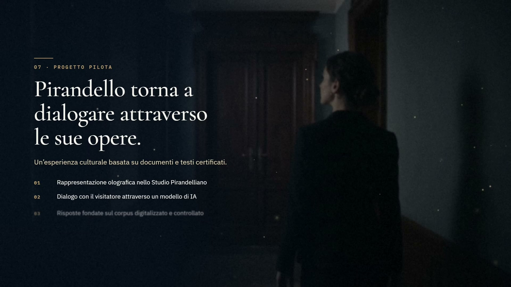
Il progetto Pirandello mostra il salto dalla digitalizzazione alla fruizione. Il visitatore entra nello studio, pone una domanda e riceve una risposta costruita sul corpus dell'autore. Il sistema deve distinguere con chiarezza le fonti e non attribuire a Pirandello contenuti estranei ai documenti.
08 · Replicabilità
Aurea IA
Il progetto pilota può diventare una piattaforma per istituti culturali con fonti affidabili e un luogo di fruizione.
Opere, commenti e materiali conservati dalla Casa di Dante.
Carte, corrispondenza e percorsi storici del fondo.
Archivi letterari e biografici con fonti controllate.
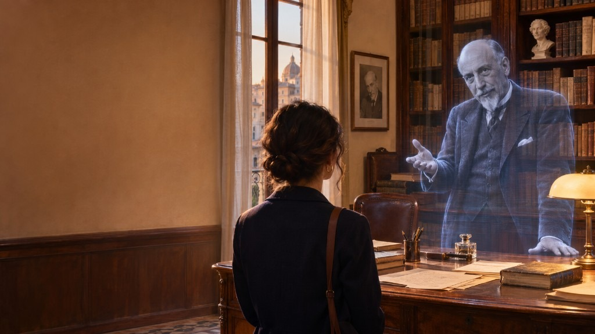
Esperienze interattive legate al luogo e alle collezioni.
Pirandello rappresenta il primo caso, non il limite del progetto. Lo stesso modello può essere adattato ad altri autori e archivi. La condizione è disporre di un corpus affidabile, di una regia culturale e di un luogo nel quale il pubblico possa vivere l'esperienza.
09 · Conservazione predittiva
Un progetto di monitoraggio e previsione applicato a un monumento reale.
Collaborazione scientifica con i dipartimenti di Ingegneria civile e Ingegneria informatica e la Soprintendenza Speciale di Roma.
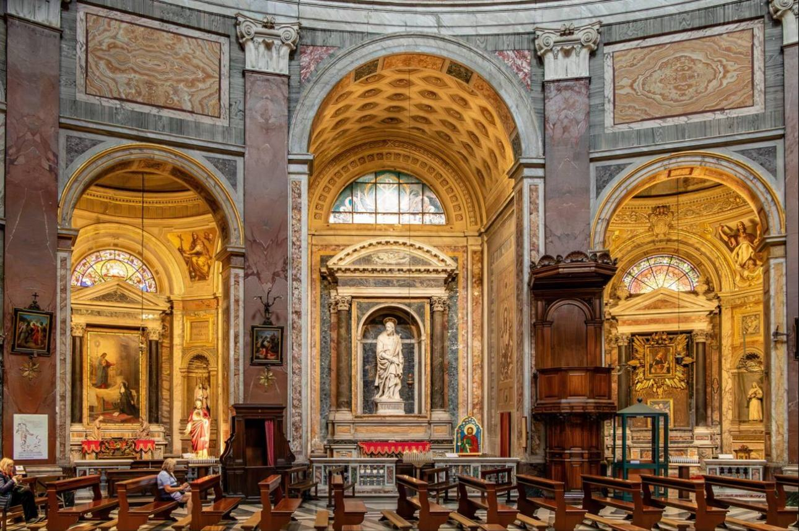
Minerva collega il restauro con la ricerca applicata. Il progetto ha già acquisito una prima serie di dati. Il portale e il modello predittivo sono in sviluppo. Droni e rilievi LiDAR potranno integrare le misure e sostenere la costruzione del digital twin.
10 · Restauro monumentale
Aurea IA
Cantieri su edifici tutelati, somme urgenze e adeguamenti impiantistici in contesti monumentali.

Palazzo Poli · San Giacomo in Augusta · Patologia degli Archivi
Archivio Centrale dello Stato · Villa Madama
Qualificazione SOA OG2 III
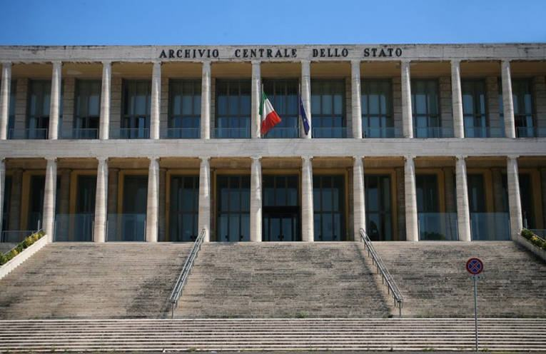
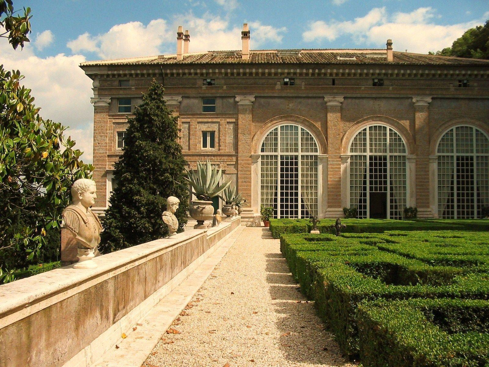
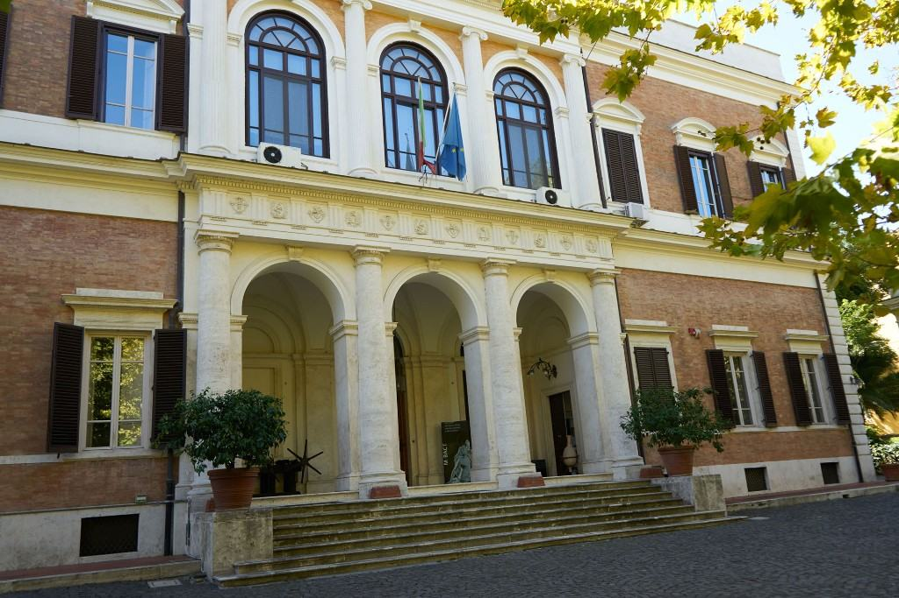
La capacità innovativa poggia su esperienza reale. M.DS ha lavorato su edifici monumentali e istituti culturali di rilievo. Questa competenza consente di comprendere i vincoli del bene e di integrare, quando serve, restauro, impianti e monitoraggio.
11 · Affidabilità operativa
Aurea IA
Restauro di beni tutelati
1.033.000 euroImpianti tecnologici
516.000 euroEdifici civili e industriali
258.000 euroMinisteri, enti culturali, corpi dello Stato e società pubbliche costituiscono la principale esperienza di committenza.
Le qualificazioni dimostrano che il gruppo può eseguire interventi e lavorare con la Pubblica Amministrazione. SOA, sistemi ISO e abilitazioni tecniche restano elementi di garanzia. In questa presentazione sostengono il progetto, senza occupare il centro del racconto.
Parliamo del vostro progetto
Lunedì — venerdì, dalle 8:00 alle 17:00.
Ing. Massimiliano De Santis
Amministratore unico e legale rappresentante · P. IVA 14322151003
M.DS S.r.l. Unipersonale
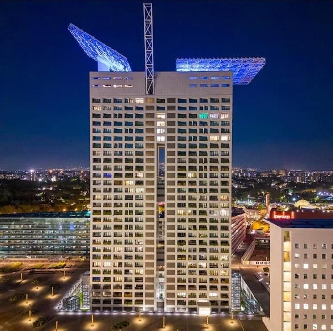
Chiusura operativa: la sede è in Eurosky a Roma. Contatti diretti per approfondire il progetto pilota e valutare insieme fattibilità, impatto culturale e sviluppo del primo caso dimostrativo.